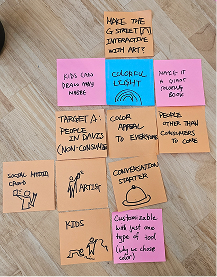
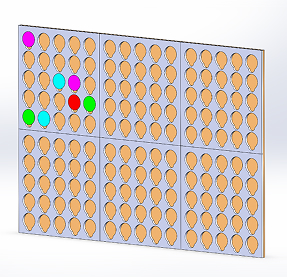
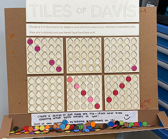

Davis Community Cubes is a public space concept aimed at transforming G Street in downtown Davis into a more welcoming, interactive environment for families, students, and locals. Our team explored the possibility of installing a historical arch structure featuring interactive, rotating blocks that blend education, art, and community engagement.
We used a human-centered design thinking process, focusing on:
We conducted 10 interviews with UC Davis students, G Street business employees, and community members. One focus persona, Jane—a librarian and mother of two—shared how downtown Davis lacks affordable, age-inclusive activities. This helped us refine our goal: make G Street more engaging for kids and families.
We asked, “How can we make visiting G Street more friendly to kids?” Early concepts included:
Each team member sketched different ideas before we aligned on a simplified, block-based design.
We used CAD and laser cutting to build interactive cutout boards with rotating tiles. We then set up our prototype on G Street and observed interactions.
User Distribution: 50% college students, 25% kids, 16.7% parents, 8.3% elderly.
 Users responded positively to the interaction and creativity of the cubes:
Based on testing, we evolved the concept into an interactive block archway. Each rotating block would feature:
Inspired by interactive urban installations, we envisioned the Community Cubes not just a decor, but something that sparks interaction and strengthens place identity. By offering both playful creativity and educational content, the project helps G Street serve as both a community hub and a landmark.
This project taught me the value of community co-creation and how public design can be both informative and joyful. Through interviews, prototyping, and iteration, we discovered that even simple interactions—like flipping a tile—can bring people together and enhance urban spaces.